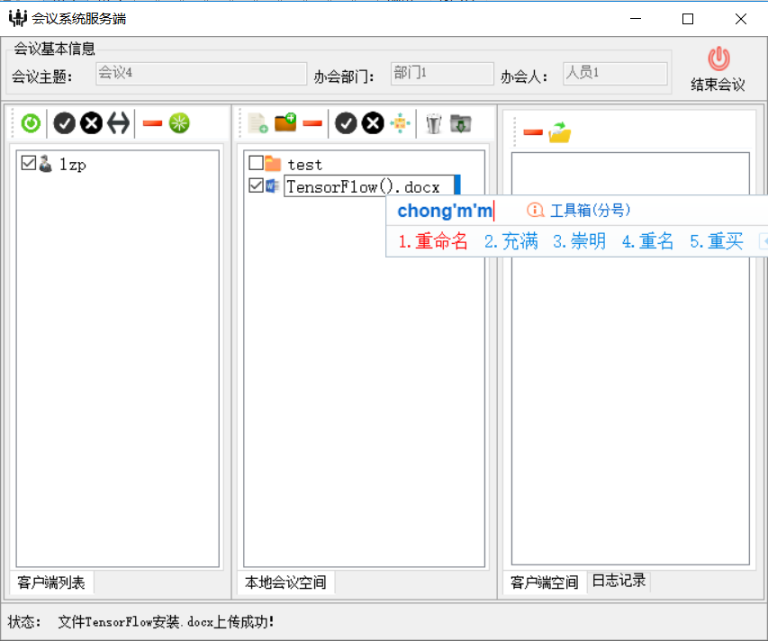

欢迎使用便携式无纸化会议系统
基本信息
文档目的
本文档主要用于介绍便携式无纸化会议系统的使用方式，通过阅读本文档，能够使用户更快的了解会议系统所包含的功能 以及功能的操作方式。并对常见的问题以及相应的处理方式予以展示，帮助用户解决大部分可能遇到的问题。
读者对象
- 会议系统用户
- 培训人员
文档内容
-
操作指南
- 搭建会议网络
- 创建会议
- 客户端管理
- 文件管理
- 日志管理
- 系统配置
- 历史记录管理
- 常见问题及解决方法
技术服务
服务支持：北京京航计算通讯研究所对本会议系统提供技术服务
联系方式：68374899
操作指南
通过阅读操作指南，能够快速的帮助用户熟悉会议系统的使用方式，以下会便携式无纸化会议系统所包含的功能及使用方式予以说明：
搭建会议网络
便携式无纸化会议系统能够使用户快速的构建会议网络，通过交换机（路由器、集线器）将参加会议的各终端（含服务端、客户端）接入网络，便可以搭建好整个会议网络。
创建会议
创建会议由安装了服务端的计算机创建，用户可以使用默认的会议主题、部门、办会人，也可以手动填写会议相关信息，进行会议的创建。
-
等待会议信息填写完毕，点击“开始会议”便可创建一个会议，并进入会议管理主界面，服务端将扫描整个网络环境，将接入网络的客户端信息显示在左侧客户端区域中。
客户端管理
客户端管理包含：客户端刷新、选择（单独选择、全选）、取消选择（单独取消、全取消）、删除、客户端端重启
- 客户端刷新：一般而言，所有的终端在会议开始时，已基本接入系统完毕。客户端刷新主要用于会议期间如果有新的客户端接入后，可以由服务端进行刷新，获得新接入的客户端。
- 客户端选择：客户端选择在初次接入系统时，均默认为选中。客户端选择是后续操作的基础，需要给某客户端发送会议资料时，需要先将该客户端选中。
- 客户端取消：用于撤销对客户端的选中，支持单独的取消以及全部取消。
- 客户端删除：当某个客户端离开会议后或者某客户端不再参加会议时，可以将该客户端删除。删除后，如果该主机没有将物理连接断开，则使用刷新，可以继续将该客户端接入会议系统。
- 客户端重启：当某客户端出现故障，无法接受会议材料、无法有效关闭某些进程时，可以使用重启开关，将该客户端进行重启处理。
文件管理
文件管理包含文件资料的本地上传、分发、删除、下载、查看、编辑、重命名等|客户端文件打开、客户端删除等操作
-
文件上传包含文件类上传和文件夹的上传:
文件类上传：可以使用文件上传菜单，选择文件，进行上传，也可直接将文件拖入本地会议空间，完成文件的上传
文件夹上传：通过点击上传文件夹按钮进行上传，或通过拖拽文件夹至会议空间完成文件夹的上传
-
文件分发支持单文件、多文件、文件夹，支持单独发、群发等组合方式
文件分发一般步骤：1.选中欲发送的客户端；2：选中欲发送的文件夹或文件；3.点击“分发”菜单完成分发操作
发送成功后：
- 文件删除支持文件、文件夹的删除，通过选中欲删除文件，点击“删除”菜单完成删除操作。删除操作是安全清除操作，通过在系统设置中设置的清除程度来进行文件删除操作。
- 文件下载支持文件、文件夹的下载
- 文件查看：通过双击欲查看文件，由操作系统提供相应的查看程序进行文件查看
- id="edit">文件编辑：双击文件打开后，可进行文件的编辑操作，这部分编辑工具由操作系统支持，相应的编辑工具需要在操作系统中安装。
- 文件重命名：左键点击两次欲重命名文件，便可进入文件重命名状态，修改文件名即可实现文件重命名操作。

- 客户端文件打开
- 客户端文件删除
img src="img/file/10.png" alt="Delete" />
日志管理
- Colored
- Grey
系统设置
系统设置主界面，主要包含基本设置、会议默认信息配置、空间清除配置、数据备份/恢复设置、历史记录显示配置及主窗体设置
- 基本设置：可以设置最大客户端数量、数据传输是否加密、系统是否兼容水印
- 会议默认信息配置：用户可以设置默认的会议主题、部门、办会人员等，也可设置按时间进行会议主题的设置
- 空间清除配置：用户可以设置会议空间清除程度，包含轻度、中度、深度清除
- 数据备份/恢复设置：用户可以设置数据备份或恢复时默认的数据格式，包含xml格式及xls格式
- 历史记录显示配置：用户可以设置历史记录的显示方式，包括显示范围、显示方式的设置
-
主窗体设置：用户可以设置主窗体的显示方式，包含背景图片的修改，是否显示控制菜单，是否最大化显示等
配置整体界面：
编辑默认设置如下图所示：
历史记录管理
-
历史查看
启动会议系统服务端，点击“历史记录”按钮，进入历史记录管理界面，可查看会议历史记录：
进入历史会议主界面，左侧树形显示为选定时期内的历史会议记录，上侧为菜单栏，右侧区域为选中的会议基本信息和会议空间内容；当会议空间中存在内容时，图标为亮，无内容时为暗状态。
-
全部导出
导出模式包含两种，全部导出为将历史会议记录全部导出，导出格式由配置界面决定，包含xml格式、xls格式。
输出导出文件名称：
查看导出文件：
-
选择导出
会议历史记录导出，支持用户自定义选择导出，可以通过设置导出条件来实现选择导出。
可设置的条件包括：会议日期、会议主题、办会部门、办会人员
设置导出条件：
输出导出文件名称：

查看导出文件：
-
xml导入
选择导入的数据源（.xml格式）
-
xls导入
选择导入的数据源（.xls格式）

-
空间清除
当会议空间不为0时，可通过点击菜单栏的“清空”菜单，对会议空间进行安全清除！

-
显示设置
对历史会议记录显示方式进行改变，可以通过选择显示会议记录的范围、会议空间的大小及顺序、倒序等模式进行显示。